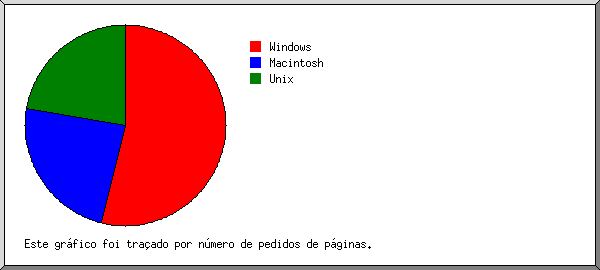

Estatísticas do Servidor Web de proloconline.com.br
Estatísticas do Servidor Web de proloconline.com.br
Começo do programa em Ter-15-Nov-2016 10:00.
Análise de pedidos desde Seg-31-Out-2016 17:22 até Ter-15-Nov-2016 08:10 (14,62 dias).
Estatísticas do Servidor Web de proloconline.com.brComeço do programa em Ter-15-Nov-2016 10:00.
Análise de pedidos desde Seg-31-Out-2016 17:22 até Ter-15-Nov-2016 08:10 (14,62 dias).
(Ir a: Início | Sumário Geral | Relatório Mensal | Resumo Diário | Resumo Horário | Relatório de Domínios | Relatório de organizações | Relatório de referência redireccionada | Relatório de referência falhada | Relatório do sítio de referência | Relatório de Leitores | Resumo de Leitores | Relatório de Sistemas Operativos | Relatório de Códigos de Estado | Relatório de Tamanho de Ficheiro | Relatório de Tipos de Ficheiro | Relatório de Directorias | Relatório de Pedidos)
Os valores entre parêntesis referem-se aos 7 dias até 15-Nov-2016 10:00.
Pedidos atendidos: 3 482 (1 747)
Número médio de pedidos atendidos por dia: 238 (249)
Pedidos de páginas atendidos: 157 (92)
Número médio de pedidos de páginas atendidos por dia: 10 (13)
Pedidos não atendidos: 319 (1)
Pedidos redirigidos: 363 (9)
Ficheiros diferentes solicitados: 93 (147)
Servidores diferentes atendidos: 90 (109)
Tráfego total: 109,95 megabytes (57,89 megabytes)
Tráfego médio transferido por dia: 7,52 megabytes (8,27 megabytes)
(Ir a: Início | Sumário Geral | Relatório Mensal | Resumo Diário | Resumo Horário | Relatório de Domínios | Relatório de organizações | Relatório de referência redireccionada | Relatório de referência falhada | Relatório do sítio de referência | Relatório de Leitores | Resumo de Leitores | Relatório de Sistemas Operativos | Relatório de Códigos de Estado | Relatório de Tamanho de Ficheiro | Relatório de Tipos de Ficheiro | Relatório de Directorias | Relatório de Pedidos)
Cada unidade ( ) representa 4 pedidos de páginas ou fracção.
) representa 4 pedidos de páginas ou fracção.
| mês | N.ped | Pgs. | |
|---|---|---|---|
| Out 2016 | 1 | 1 | |
| Nov 2016 | 3481 | 156 |    |
Mês mais movimentado: Nov 2016 (156 pedidos de páginas).
(Ir a: Início | Sumário Geral | Relatório Mensal | Resumo Diário | Resumo Horário | Relatório de Domínios | Relatório de organizações | Relatório de referência redireccionada | Relatório de referência falhada | Relatório do sítio de referência | Relatório de Leitores | Resumo de Leitores | Relatório de Sistemas Operativos | Relatório de Códigos de Estado | Relatório de Tamanho de Ficheiro | Relatório de Tipos de Ficheiro | Relatório de Directorias | Relatório de Pedidos)
Cada unidade () representa 2 pedidos de páginas ou fracção.
| dia | N.ped | Pgs. | |
|---|---|---|---|
| Dom | 5 | 0 | |
| Seg | 135 | 14 | |
| Ter | 1623 | 52 |   |
| Qua | 261 | 10 | |
| Qui | 1040 | 61 | |
| Sex | 388 | 19 | |
| Sab | 30 | 1 | |
(Ir a: Início | Sumário Geral | Relatório Mensal | Resumo Diário | Resumo Horário | Relatório de Domínios | Relatório de organizações | Relatório de referência redireccionada | Relatório de referência falhada | Relatório do sítio de referência | Relatório de Leitores | Resumo de Leitores | Relatório de Sistemas Operativos | Relatório de Códigos de Estado | Relatório de Tamanho de Ficheiro | Relatório de Tipos de Ficheiro | Relatório de Directorias | Relatório de Pedidos)
Cada unidade () representa 1 pedido de uma página.
| h | N.ped | Pgs. | |
|---|---|---|---|
| 00 | 34 | 1 | |
| 01 | 26 | 1 | |
| 02 | 0 | 0 | |
| 03 | 0 | 0 | |
| 04 | 9 | 0 | |
| 05 | 3 | 1 | |
| 06 | 0 | 0 | |
| 07 | 184 | 8 | |
| 08 | 184 | 10 | |
| 09 | 88 | 4 | |
| 10 | 56 | 3 | |
| 11 | 80 | 4 | |
| 12 | 302 | 13 | |
| 13 | 372 | 23 | |
| 14 | 213 | 10 | |
| 15 | 214 | 14 | |
| 16 | 871 | 33 | |
| 17 | 489 | 18 | |
| 18 | 99 | 4 | |
| 19 | 121 | 2 | |
| 20 | 134 | 8 | |
| 21 | 3 | 0 | |
| 22 | 0 | 0 | |
| 23 | 0 | 0 |
(Ir a: Início | Sumário Geral | Relatório Mensal | Resumo Diário | Resumo Horário | Relatório de Domínios | Relatório de organizações | Relatório de referência redireccionada | Relatório de referência falhada | Relatório do sítio de referência | Relatório de Leitores | Resumo de Leitores | Relatório de Sistemas Operativos | Relatório de Códigos de Estado | Relatório de Tamanho de Ficheiro | Relatório de Tipos de Ficheiro | Relatório de Directorias | Relatório de Pedidos)
Mostrando os domínios, ordenados por quantidade de tráfego.
| N.ped | %bytes | domínio |
|---|---|---|
| 3482 | 100% | [endereço numérico não traduzido] |
(Ir a: Início | Sumário Geral | Relatório Mensal | Resumo Diário | Resumo Horário | Relatório de Domínios | Relatório de organizações | Relatório de referência redireccionada | Relatório de referência falhada | Relatório do sítio de referência | Relatório de Leitores | Resumo de Leitores | Relatório de Sistemas Operativos | Relatório de Códigos de Estado | Relatório de Tamanho de Ficheiro | Relatório de Tipos de Ficheiro | Relatório de Directorias | Relatório de Pedidos)
Mostrando as 20 primeiras organizações por número de pedidos, ordenadas por número de pedidos.
| N.ped | %bytes | organização |
|---|---|---|
| 1038 | 30,97% | 189.41 |
| 1002 | 28,09% | 186.210 |
| 435 | 13,92% | 179.104 |
| 210 | 3,38% | 191.162 |
| 73 | 1,63% | 189.104 |
| 63 | 2,69% | 179.237 |
| 55 | 1,22% | 201.7 |
| 48 | 0,75% | 177.54 |
| 48 | 0,84% | 181.222 |
| 44 | 1,02% | 168.194 |
| 43 | 1,52% | 191.211 |
| 40 | 0,06% | 187.81 |
| 36 | 1,10% | 179.190 |
| 32 | 1,43% | 200.163 |
| 32 | 0,78% | 201.58 |
| 28 | 1,07% | 191.54 |
| 28 | 1,40% | 177.35 |
| 26 | 0,39% | 177.176 |
| 24 | 0,86% | 66.249 |
| 22 | 0,02% | 191.142 |
| 155 | 6,89% | [não listadas: 35 organizações] |
(Ir a: Início | Sumário Geral | Relatório Mensal | Resumo Diário | Resumo Horário | Relatório de Domínios | Relatório de organizações | Relatório de referência redireccionada | Relatório de referência falhada | Relatório do sítio de referência | Relatório de Leitores | Resumo de Leitores | Relatório de Sistemas Operativos | Relatório de Códigos de Estado | Relatório de Tamanho de Ficheiro | Relatório de Tipos de Ficheiro | Relatório de Directorias | Relatório de Pedidos)
Mostrando os URLs de referência, ordenados por número de pedidos redireccionados.
(Ir a: Início | Sumário Geral | Relatório Mensal | Resumo Diário | Resumo Horário | Relatório de Domínios | Relatório de organizações | Relatório de referência redireccionada | Relatório de referência falhada | Relatório do sítio de referência | Relatório de Leitores | Resumo de Leitores | Relatório de Sistemas Operativos | Relatório de Códigos de Estado | Relatório de Tamanho de Ficheiro | Relatório de Tipos de Ficheiro | Relatório de Directorias | Relatório de Pedidos)
Mostrando os 30 primeiros URLs de referência por número de pedidos falhados, ordenados por número de pedidos falhados.
(Ir a: Início | Sumário Geral | Relatório Mensal | Resumo Diário | Resumo Horário | Relatório de Domínios | Relatório de organizações | Relatório de referência redireccionada | Relatório de referência falhada | Relatório do sítio de referência | Relatório de Leitores | Resumo de Leitores | Relatório de Sistemas Operativos | Relatório de Códigos de Estado | Relatório de Tamanho de Ficheiro | Relatório de Tipos de Ficheiro | Relatório de Directorias | Relatório de Pedidos)
Mostrando os sítios de referência, ordenados por número de pedidos.
| N.ped | sítio |
|---|---|
| 2126 | https://proloconline.com.br/ |
| 1137 | https://www.proloconline.com.br/ |
| 2 | https://www.google.com.br/ |
| 2 | http://www.google.com/ |
| 1 | http://173.44.46.117/ |
| 1 | https://inovarloca.virtuaserver.com.br:2083/ |
(Ir a: Início | Sumário Geral | Relatório Mensal | Resumo Diário | Resumo Horário | Relatório de Domínios | Relatório de organizações | Relatório de referência redireccionada | Relatório de referência falhada | Relatório do sítio de referência | Relatório de Leitores | Resumo de Leitores | Relatório de Sistemas Operativos | Relatório de Códigos de Estado | Relatório de Tamanho de Ficheiro | Relatório de Tipos de Ficheiro | Relatório de Directorias | Relatório de Pedidos)
Mostrando os leitores com pelo menos 1 pedido de uma página, ordenados por número de pedidos de páginas.
| N.ped | Pgs. | Leitor |
|---|---|---|
| 852 | 49 | Mozilla/5.0 (Windows NT 10.0; WOW64) AppleWebKit/537.36 (KHTML, like Gecko) Chrome/54.0.2840.71 Safari/537.36 |
| 359 | 25 | Mozilla/5.0 (iPhone; CPU iPhone OS 10_0_2 like Mac OS X) AppleWebKit/602.1.50 (KHTML, like Gecko) Version/10.0 Mobile/14A456 Safari/602.1 |
| 385 | 12 | Mozilla/5.0 (Linux; Android 5.0; ASUS_Z00AD Build/LRX21V) AppleWebKit/537.36 (KHTML, like Gecko) Chrome/54.0.2840.68 Mobile Safari/537.36 |
| 313 | 12 | Mozilla/5.0 (Windows NT 10.0; Win64; x64) AppleWebKit/537.36 (KHTML, like Gecko) Chrome/54.0.2840.71 Safari/537.36 |
| 623 | 12 | Mozilla/5.0 (Windows NT 10.0; WOW64) AppleWebKit/537.36 (KHTML, like Gecko) Chrome/53.0.2785.143 Safari/537.36 |
| 287 | 10 | Mozilla/5.0 (Linux; Android 5.1.1; SM-J105B Build/LMY47V) AppleWebKit/537.36 (KHTML, like Gecko) Chrome/54.0.2840.68 Mobile Safari/537.36 |
| 55 | 9 | Mozilla/5.0 (X11; Linux x86_64) AppleWebKit/537.36 (KHTML, like Gecko) Chrome/54.0.2840.71 Safari/537.36 |
| 80 | 5 | Mozilla/5.0 (Windows NT 6.1; WOW64) AppleWebKit/537.36 (KHTML, like Gecko) Chrome/54.0.2840.71 Safari/537.36 |
| 57 | 4 | Mozilla/5.0 (Macintosh; Intel Mac OS X 10_12_1) AppleWebKit/537.36 (KHTML, like Gecko) Chrome/54.0.2840.71 Safari/537.36 |
| 36 | 3 | Mozilla/5.0 (Windows NT 10.0; WOW64; rv:49.0) Gecko/20100101 Firefox/49.0 |
| 34 | 3 | Mozilla/5.0 (Mobile; Windows Phone 8.1; Android 4.0; ARM; Trident/7.0; Touch; rv:11.0; IEMobile/11.0; Microsoft; RM-1114) like iPhone OS 7_0_3 Mac OS X AppleWebKit/537 (KHTML, like Gecko) Mobile Safari/537 |
| 126 | 3 | Mozilla/5.0 (iPhone; CPU iPhone OS 10_0_2 like Mac OS X) AppleWebKit/602.1.50 (KHTML, like Gecko) CriOS/54.0.2840.66 Mobile/14A456 Safari/602.1 |
| 70 | 3 | Mozilla/5.0 (Macintosh; Intel Mac OS X 10_10_5) AppleWebKit/602.1.50 (KHTML, like Gecko) Version/10.0 Safari/602.1.50 |
| 24 | 2 | Mozilla/5.0 (Linux; Android 4.1.2; LT22i Build/6.2.A.1.100) AppleWebKit/535.19 (KHTML, like Gecko) Chrome/18.0.1025.166 Mobile Safari/535.19 |
| 27 | 2 | Mozilla/5.0 (iPhone; CPU iPhone OS 10_1_1 like Mac OS X) AppleWebKit/602.2.14 (KHTML, like Gecko) Version/10.0 Mobile/14B100 Safari/602.1 |
| 1 | 1 | Mozilla/5.0 (X11; Ubuntu; Linux x86_64; rv:49.0) Gecko/20100101 Firefox/49.0 |
| 29 | 1 | Mozilla/5.0 (Linux; Android 5.0; ASUS_Z00AD Build/LRX21V) AppleWebKit/537.36 (KHTML, like Gecko) Chrome/54.0.2840.85 Mobile Safari/537.36 |
| 123 | 0 | [não listados: 26 Leitores] |
(Ir a: Início | Sumário Geral | Relatório Mensal | Resumo Diário | Resumo Horário | Relatório de Domínios | Relatório de organizações | Relatório de referência redireccionada | Relatório de referência falhada | Relatório do sítio de referência | Relatório de Leitores | Resumo de Leitores | Relatório de Sistemas Operativos | Relatório de Códigos de Estado | Relatório de Tamanho de Ficheiro | Relatório de Tipos de Ficheiro | Relatório de Directorias | Relatório de Pedidos)
Mostrando os leitores com pelo menos 1 pedido de uma página, ordenados por número de pedidos de páginas.
| no. | N.ped | Pgs. | Leitor |
|---|---|---|---|
| 1 | 3399 | 152 | Safari |
| 2789 | 117 | Safari/537 | |
| 586 | 33 | Safari/602 | |
| 24 | 2 | Safari/535 | |
| 2 | 53 | 4 | Firefox |
| 37 | 4 | Firefox/49 | |
| 29 | 0 | [não listados: 6 Leitores] |
(Ir a: Início | Sumário Geral | Relatório Mensal | Resumo Diário | Resumo Horário | Relatório de Domínios | Relatório de organizações | Relatório de referência redireccionada | Relatório de referência falhada | Relatório do sítio de referência | Relatório de Leitores | Resumo de Leitores | Relatório de Sistemas Operativos | Relatório de Códigos de Estado | Relatório de Tamanho de Ficheiro | Relatório de Tipos de Ficheiro | Relatório de Directorias | Relatório de Pedidos)

Mostrando os Sistemas Operativos, ordenados por número de pedidos de páginas.
| no. | N.ped | Pgs. | Sistema Operativo |
|---|---|---|---|
| 1 | 1967 | 84 | Windows |
| 1827 | 76 | Windows NT | |
| 139 | 8 | Windows desconhecido | |
| 1 | 0 | Windows XP | |
| 2 | 645 | 37 | Macintosh |
| 3 | 839 | 35 | Unix |
| 839 | 35 | Linux | |
| 4 | 2 | 0 | Robôs |
| 5 | 28 | 0 | Sistema Operativo desconhecido |
(Ir a: Início | Sumário Geral | Relatório Mensal | Resumo Diário | Resumo Horário | Relatório de Domínios | Relatório de organizações | Relatório de referência redireccionada | Relatório de referência falhada | Relatório do sítio de referência | Relatório de Leitores | Resumo de Leitores | Relatório de Sistemas Operativos | Relatório de Códigos de Estado | Relatório de Tamanho de Ficheiro | Relatório de Tipos de Ficheiro | Relatório de Directorias | Relatório de Pedidos)
Mostrando os códigos de estado, por ordem numérica.
| N.ped | cod. estado |
|---|---|
| 2654 | 200 OK |
| 14 | 206 Partial content |
| 2 | 301 Document moved permanently |
| 361 | 302 Document found elsewhere |
| 814 | 304 Not modified since last retrieval |
| 301 | 404 Document not found |
| 18 | 500 Internal server error |
(Ir a: Início | Sumário Geral | Relatório Mensal | Resumo Diário | Resumo Horário | Relatório de Domínios | Relatório de organizações | Relatório de referência redireccionada | Relatório de referência falhada | Relatório do sítio de referência | Relatório de Leitores | Resumo de Leitores | Relatório de Sistemas Operativos | Relatório de Códigos de Estado | Relatório de Tamanho de Ficheiro | Relatório de Tipos de Ficheiro | Relatório de Directorias | Relatório de Pedidos)
| tamanho | N.ped | %bytes |
|---|---|---|
| 0 | 916 | |
| 1B- 10B | 8 | |
| 11B- 100B | 39 | |
| 101B- 1kB | 41 | 0,02% |
| 1kB- 10kB | 780 | 2,98% |
| 10kB-100kB | 1315 | 39,69% |
| 100kB- 1MB | 383 | 57,31% |
(Ir a: Início | Sumário Geral | Relatório Mensal | Resumo Diário | Resumo Horário | Relatório de Domínios | Relatório de organizações | Relatório de referência redireccionada | Relatório de referência falhada | Relatório do sítio de referência | Relatório de Leitores | Resumo de Leitores | Relatório de Sistemas Operativos | Relatório de Códigos de Estado | Relatório de Tamanho de Ficheiro | Relatório de Tipos de Ficheiro | Relatório de Directorias | Relatório de Pedidos)
Mostrando as extensões com pelo menos 0,1% do tráfego, ordenadas por quantidade de tráfego.
| N.ped | %bytes | extensão |
|---|---|---|
| 1590 | 55,32% | .js [JavaScript code] |
| 586 | 26,21% | .css [Cascading Style Sheets] |
| 651 | 7,23% | [extensão ausente] |
| 153 | 5,24% | .woff2 |
| 8 | 3,29% | .map |
| 157 | 1,65% | [directorias] |
| 11 | 0,49% | .woff |
| 100 | 0,25% | .jpg [JPEG graphics] |
| 1 | 0,13% | .ttf |
| 225 | 0,17% | [não listadas: 5 extensões] |
(Ir a: Início | Sumário Geral | Relatório Mensal | Resumo Diário | Resumo Horário | Relatório de Domínios | Relatório de organizações | Relatório de referência redireccionada | Relatório de referência falhada | Relatório do sítio de referência | Relatório de Leitores | Resumo de Leitores | Relatório de Sistemas Operativos | Relatório de Códigos de Estado | Relatório de Tamanho de Ficheiro | Relatório de Tipos de Ficheiro | Relatório de Directorias | Relatório de Pedidos)
Mostrando as directorias com pelo menos 0,01% do tráfego, ordenadas por quantidade de tráfego.
| N.ped | %bytes | directoria |
|---|---|---|
| 1737 | 50,00% | /arq/ |
| 178 | 24,41% | /js/ |
| 141 | 10,02% | /css/ |
| 295 | 6,35% | /build/ |
| 739 | 5,92% | [directoria da raiz] |
| 190 | 2,94% | /leads/ |
| 187 | 0,32% | /images/ |
| 7 | 0,02% | /index.php/ |
| 8 | 0,02% | /password/ |
(Ir a: Início | Sumário Geral | Relatório Mensal | Resumo Diário | Resumo Horário | Relatório de Domínios | Relatório de organizações | Relatório de referência redireccionada | Relatório de referência falhada | Relatório do sítio de referência | Relatório de Leitores | Resumo de Leitores | Relatório de Sistemas Operativos | Relatório de Códigos de Estado | Relatório de Tamanho de Ficheiro | Relatório de Tipos de Ficheiro | Relatório de Directorias | Relatório de Pedidos)
Mostrando os ficheiros com pelo menos 20 pedidos, ordenados por número de pedidos.
| N.ped | %bytes | hora ant. | ficheiro |
|---|---|---|---|
| 257 | 1,50% | 15/Nov/16 08:10 | /login |
| 157 | 1,65% | 14/Nov/16 10:59 | / |
| 147 | 2,32% | 11/Nov/16 09:11 | /leads/novo |
| 141 | 10,02% | 12/Nov/16 16:10 | /css/app.css |
| 137 | 5,80% | 14/Nov/16 10:59 | /build/css/custom.min.css |
| 134 | 23,62% | 12/Nov/16 16:10 | /js/app.js |
| 133 | 2,66% | 11/Nov/16 15:37 | /leads |
| 129 | 0,52% | 14/Nov/16 10:59 | /build/js/custom.min.js |
| 124 | 14/Nov/16 10:59 | /favicon.ico | |
| 108 | 8,30% | 14/Nov/16 10:59 | /arq/bootstrap/dist/css/bootstrap.min.css |
| 107 | 4,43% | 14/Nov/16 10:59 | /arq/jquery.inputmask/dist/min/jquery.inputmask.bundle.min.js |
| 107 | 1,97% | 14/Nov/16 10:59 | /arq/font-awesome/css/font-awesome.min.css |
| 106 | 7,65% | 14/Nov/16 10:59 | /arq/Flot/jquery.flot.js |
| 106 | 5,42% | 14/Nov/16 10:59 | /arq/jquery/dist/jquery.min.js |
| 106 | 1,47% | 14/Nov/16 10:59 | /arq/Flot/jquery.flot.pie.js |
| 105 | 1,19% | 14/Nov/16 10:59 | /arq/skycons/skycons.js |
| 105 | 0,21% | 14/Nov/16 10:59 | /arq/Flot/jquery.flot.resize.js |
| 105 | 2,30% | 14/Nov/16 10:59 | /arq/bootstrap/dist/js/bootstrap.min.js |
| 105 | 0,73% | 14/Nov/16 10:59 | /arq/Flot/jquery.flot.time.js |
| 104 | 0,44% | 14/Nov/16 10:59 | /arq/Flot/jquery.flot.stack.js |
| 100 | 0,25% | 14/Nov/16 10:59 | /images/img.jpg |
| 95 | 4,57% | 14/Nov/16 10:59 | /arq/font-awesome/fonts/fontawesome-webfont.woff2 |
| 95 | 4,57% | 14/Nov/16 10:59 | /arq/font-awesome/fonts/fontawesome-webfont.woff2?v=4.6.3 |
| 87 | 0,07% | 14/Nov/16 10:59 | /images/usuario/img-person.png |
| 58 | 0,67% | 14/Nov/16 10:59 | /arq/bootstrap/dist/fonts/glyphicons-halflings-regular.woff2 |
| 29 | 14/Nov/16 11:00 | /ponto-partida | |
| 29 | 0,03% | 11/Nov/16 07:59 | /build/js/geolocation.js |
| 27 | 0,09% | 11/Nov/16 10:20 | /register |
| 26 | 0,95% | 3/Nov/16 11:12 | /arq/jqvmap/dist/maps/jquery.vmap.world.js |
| 26 | 0,04% | 3/Nov/16 11:12 | /arq/jqvmap/examples/js/jquery.vmap.sampledata.js |
| 24 | 0,02% | 1/Nov/16 17:19 | /arq/iCheck/skins/flat/green.css |
| 23 | 0,03% | 1/Nov/16 17:19 | /arq/bootstrap-progressbar/bootstrap-progressbar.min.js |
| 23 | 0,02% | 1/Nov/16 17:19 | /arq/nprogress/nprogress.css |
| 23 | 0,16% | 1/Nov/16 17:19 | /arq/nprogress/nprogress.js |
| 23 | 0,23% | 1/Nov/16 17:19 | /arq/flot.curvedlines/curvedLines.js |
| 23 | 0,25% | 1/Nov/16 17:19 | /arq/gauge.js/dist/gauge.min.js |
| 23 | 0,47% | 1/Nov/16 17:19 | /arq/jqvmap/dist/jquery.vmap.js |
| 23 | 0,01% | 1/Nov/16 17:19 | /arq/jqvmap/dist/jqvmap.min.css |
| 23 | 0,02% | 1/Nov/16 17:19 | /arq/flot-spline/js/jquery.flot.spline.min.js |
| 23 | 0,10% | 1/Nov/16 17:19 | /arq/flot.orderbars/js/jquery.flot.orderBars.js |
| 23 | 2,04% | 1/Nov/16 17:19 | /arq/Chart.js/dist/Chart.min.js |
| 23 | 0,07% | 1/Nov/16 17:19 | /arq/iCheck/icheck.min.js |
| 23 | 0,07% | 1/Nov/16 17:19 | /arq/bootstrap-progressbar/css/bootstrap-progressbar.css |
| 23 | 0,36% | 1/Nov/16 17:19 | /arq/fastclick/lib/fastclick.js |
| 23 | 1,79% | 1/Nov/16 17:19 | /arq/DateJS/build/date.js |
| 22 | 0,34% | 1/Nov/16 17:19 | /js/datepicker/daterangepicker.js |
| 22 | 0,45% | 1/Nov/16 17:19 | /js/moment/moment.min.js |
| 92 | 4,69% | 14/Nov/16 04:13 | [não listados: 39 ficheiros] |